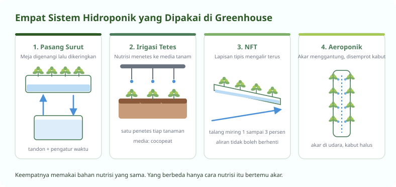
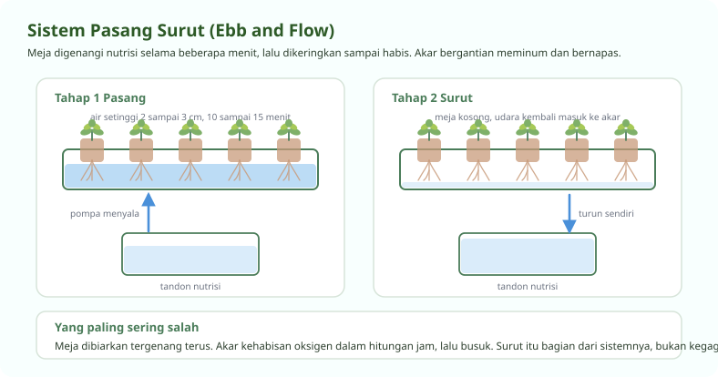
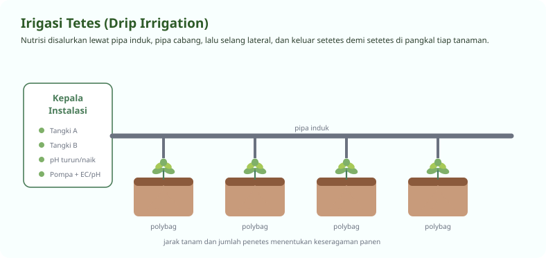
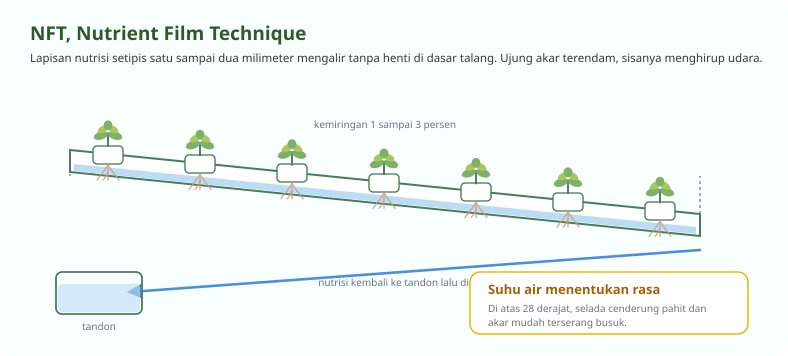
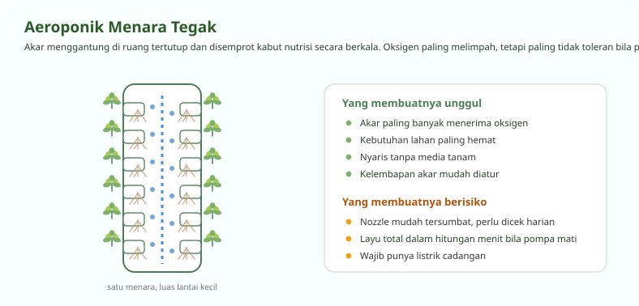

Empat Cara Nutrisi Bertemu Akar
Bahannya sama, yang berbeda hanya cara mengantarkannya
Semua sistem hidroponik memberi tanaman hal yang sama, yaitu air, unsur hara terlarut, dan oksigen di daerah akar. Yang membedakan keempat sistem di bawah ini hanya cara ketiganya diantarkan. Memahami perbedaan itu penting, karena kesalahan tersering pemula adalah memilih sistem yang tidak cocok dengan tanaman dan tenaga yang tersedia.
Satu hal berlaku untuk semuanya. Akar butuh oksigen sama pentingnya dengan butuh pupuk. Sistem yang membuat akar terendam terus-menerus tanpa aerasi akan gagal, secanggih apa pun peralatannya.

Sistem 1: Pasang Surut
Ebb and flow, atau flood and drain
Meja tanam digenangi larutan nutrisi sampai setinggi dua sampai tiga sentimeter, dibiarkan sepuluh sampai lima belas menit, lalu dibiarkan surut kembali ke tandon. Saat surut itulah udara segar tertarik masuk ke sela media dan akar bernapas.
Sistem ini paling sering dipakai di meja persemaian, karena penyiraman jadi merata dan tidak ada bibit yang tergenang berlebihan. Untuk kebun kecil, ini juga sistem paling mudah dirawat sendiri.

Bagian yang harus ada
Pompa dan tandon
Pompa celup dengan daya sesuai tinggi angkat. Tandon ditutup supaya tidak ditumbuhi lumut.
Pengatur waktu
Menentukan berapa kali sehari meja digenangi. Tanpa ini Anda harus menunggui pompa sepanjang hari.
Meja genang
Dasarnya rata dengan lubang buang di titik terendah, supaya air benar-benar habis saat surut.
Alat ukur EC dan pH
Larutan dipakai berulang, jadi kepekatannya berubah setiap hari dan harus dipantau.
Untung dan ruginya
| Sisi | Keterangan |
|---|---|
| Penyerapan hara | Merata karena seluruh media terbasahi sekaligus |
| Risiko busuk akar | Rendah, selama tahap surut benar-benar terjadi |
| Pemakaian air | Hemat, larutan kembali ke tandon dan dipakai lagi |
| Biaya awal | Sedang, perlu meja kedap air dan pengatur waktu |
| Titik lemah | Penyakit akar menyebar cepat karena air dipakai bersama |
Sistem 2: Irigasi Tetes
Drip irrigation, andalan tanaman buah
Larutan dialirkan dari pipa induk ke pipa cabang, lalu ke selang lateral, dan keluar setetes demi setetes lewat penetes di pangkal tiap tanaman. Media tanam seperti cocopeat atau sekam menahan air itu sebentar sebelum diserap akar.
Ini sistem paling lazim untuk melon, tomat, cabai, dan paprika, karena tiap tanaman bisa diberi takaran sendiri dan daun tetap kering. Daun yang kering jauh lebih jarang terkena penyakit jamur.

Sistem 3: NFT
Nutrient film technique, lapisan tipis yang mengalir
Larutan mengalir tipis, sekitar satu sampai dua milimeter, di dasar talang yang dimiringkan satu sampai tiga persen. Hanya ujung akar yang terendam, sisanya berada di udara lembap di dalam talang.
NFT memberi pertumbuhan paling cepat untuk sayuran daun dan hampir tidak memerlukan media tanam. Konsekuensinya, aliran tidak boleh berhenti. Pompa mati satu jam di siang hari sudah cukup membuat selada layu permanen.

Sistem 4: Aeroponik
Akar menggantung, nutrisi berupa kabut
Akar dibiarkan menggantung di ruang tertutup dan disemprot kabut halus secara berkala. Karena akar bersentuhan langsung dengan udara, pasokan oksigennya paling melimpah di antara semua sistem, dan pertumbuhannya paling cepat.
Bentuk yang paling sering dipakai di Indonesia adalah menara tegak, karena satu menara menampung puluhan lubang tanam di atas luas lantai kurang dari satu meter persegi.

Memilih Sistem yang Cocok
Sesuaikan dengan tanaman, tenaga, dan kesiapan listrik
| Sistem | Paling cocok untuk | Kebutuhan perhatian | Tahan mati listrik |
|---|---|---|---|
| Pasang surut | Persemaian dan sayuran daun | Sedang | Cukup tahan, media masih menyimpan air |
| Irigasi tetes | Melon, tomat, cabai, paprika | Sedang | Tahan, media menahan air beberapa jam |
| NFT | Selada dan sayuran daun cepat panen | Tinggi | Rentan, layu dalam hitungan jam |
| Aeroponik | Sayuran daun di lahan sempit | Sangat tinggi | Sangat rentan, layu dalam menit |
Kalau ini instalasi pertama Anda, mulailah dari irigasi tetes atau pasang surut. Keduanya memaafkan kesalahan. NFT dan aeroponik memberi hasil lebih cepat, tetapi menuntut listrik yang tidak boleh putus dan mata yang memeriksa setiap hari.
Berapa pun sistem yang Anda pilih, kepekatan larutannya dihitung dengan cara yang sama. Kalkulator AB Mix di situs ini menghitung takaran pekatan untuk volume tandon Anda, dan juga bisa meracik dari pupuk tunggal.
Pertanyaan Seputar Modul Ini
Yang paling sering ditanyakan peserta
Sistem hidroponik apa yang paling cocok untuk pemula?
Irigasi tetes dan pasang surut adalah dua yang paling memaafkan kesalahan. Keduanya memakai media tanam yang menyimpan air, jadi tanaman tidak langsung layu ketika listrik padam atau pompa mati sebentar.
NFT dan aeroponik memberi pertumbuhan lebih cepat, tetapi keduanya menuntut aliran yang tidak boleh berhenti. Untuk instalasi pertama, kegagalan yang berjalan lambat jauh lebih mudah dipelajari daripada kegagalan yang terjadi dalam hitungan menit.
Apa bedanya NFT dan DFT?
NFT mengalirkan lapisan nutrisi setipis satu sampai dua milimeter, sehingga sebagian besar akar berada di udara lembap. DFT menggenangi talang jauh lebih dalam, sekitar empat sampai enam sentimeter, dan akar hampir seluruhnya terendam.
Akibatnya, DFT lebih tahan mati listrik karena air tetap ada di talang, tetapi akarnya lebih mudah kekurangan oksigen kalau tidak diberi aerasi tambahan. NFT tumbuh lebih cepat, dengan syarat pompanya tidak pernah berhenti.
Apakah hidroponik bisa jalan tanpa listrik?
Bisa, tetapi hanya dengan sistem sumbu atau rakit apung, dan hasilnya jauh di bawah sistem bermotor. Sistem sumbu mengandalkan kapilaritas kain flanel, sehingga pasokan air terbatas dan hanya memadai untuk sayuran daun kecil di skala rumah tangga.
Untuk semua sistem yang dibahas di modul ini, listrik wajib ada. Kalau di tempat Anda listrik sering padam, siapkan pompa cadangan bertenaga aki sebelum menebar benih, bukan sesudahnya.
Berapa lama pompa harus menyala setiap hari?
Pada sistem pasang surut, umumnya empat sampai delapan kali sehari, masing-masing sepuluh sampai lima belas menit, disesuaikan dengan cuaca. Hari panas menuntut siklus lebih sering.
Pada NFT dan aeroponik, aliran berjalan terus-menerus di siang hari. Sebagian petani mengistirahatkannya di malam hari, tetapi itu hanya aman kalau suhu malam benar-benar turun dan akar sudah kuat.
Seluruh modul boleh dibaca berurutan atau melompat sesuai kebutuhan. Lihat daftar lengkapnya.